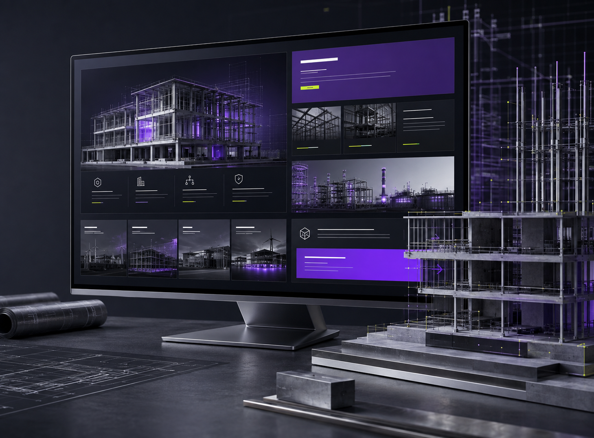

Home
Objetivo: apresentar posicionamento, competências e caminhos principais de navegação.
- Proposta de valor
- Áreas de atuação
- Serviços em destaque
- Diferenciais
- Projetos selecionados
- CTA comercial
Engenharia integrada para projetos que exigem segurança, eficiência e visão de longo prazo.